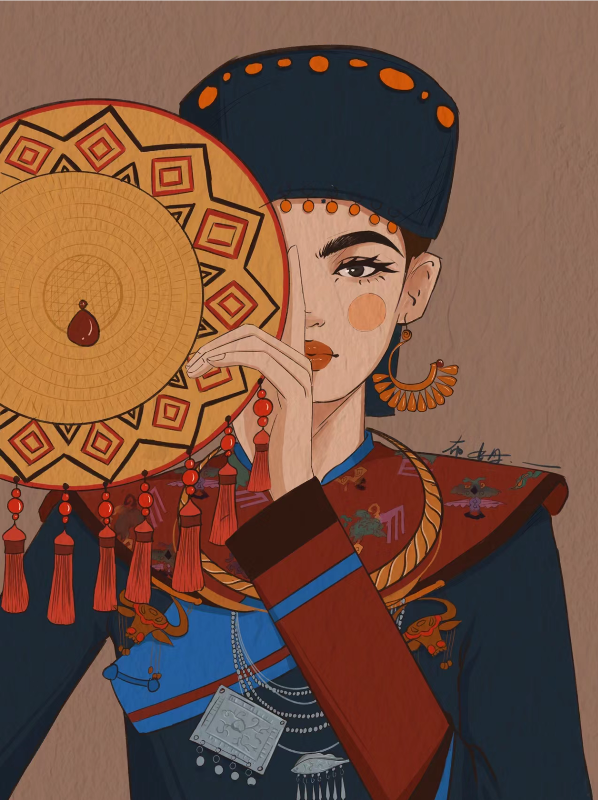
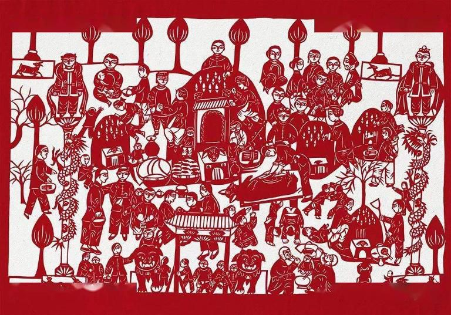
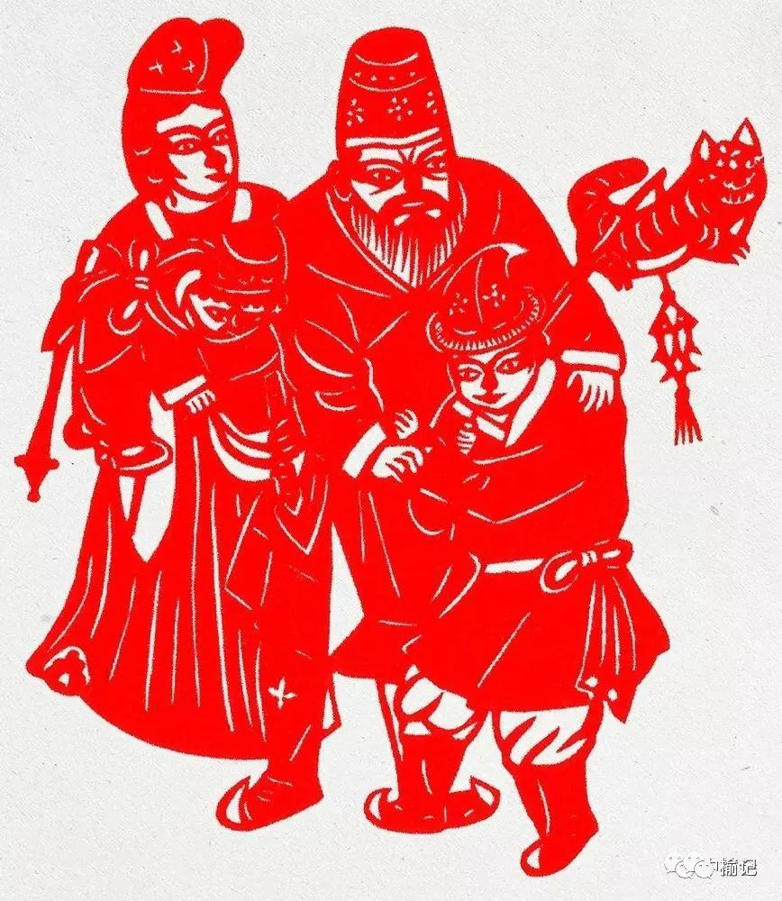

匠心故事


毛南族花竹帽：匠心独运的民族瑰宝
毛南族花竹帽以其独特的制作工艺和深厚的文化内涵，成为了毛南族文化的象征之一。它不仅是生活实用品，更是一种文化传承和艺术表达。 花竹帽采用毛南山特竹子精心编织而成，工艺精细，图案多样，既展现了毛南族的手工技艺，又蕴含了丰富的文化寓意。 随着对传统文化的重视，花竹帽的价值和意义得到了更广泛的认可，成为连接过去与现在、民族与世界的纽带。
阅读更多


天才剪花娘子：郭佩珍
郭佩珍是中国著名的剪纸艺术家，她的剪纸作品以其精湛的技艺和深厚的文化内涵而著称。 郭佩珍出生于陕西省的一个艺术世家，自幼受到家庭艺术的熏陶，对剪纸艺术产生了浓厚的兴趣。 她不仅继承了传统的剪纸技艺，还不断创新，将现代元素融入传统艺术之中，创作出了许多独具特色的作品。 郭佩珍的剪纸作品题材广泛，既有反映民间传说的神话故事，也有描绘现实生活的场景，还有表现自然风光的景致。 她的作品线条流畅，造型生动，色彩丰富，具有很强的视觉冲击力和艺术感染力。郭佩珍的剪纸艺术不仅在国内享有盛誉，在国际上也得到了广泛的认可和赞誉。 郭佩珍的故事激励着一代又一代的艺术家，她用自己的双手传承和发扬了中国传统文化，让世界看到了中国剪纸艺术的魅力。 她的生活经历和艺术成就，成为了中国非物质文化遗产保护的重要组成部分，也是中华民族文化自信的体现。
阅读更多